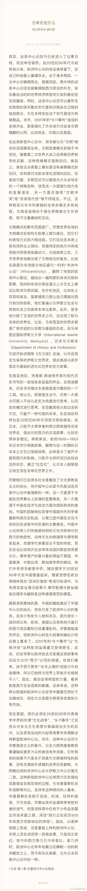

斯图亚特9
2019-10-10
各地的中心论论调，从非洲说到东南亚，说到南亚，说到日本，最后不负众望说到了中国。正当我感慨果然用中国人压轴的时候，突然发现后面还有一段，讲到了美国。高，实在是高！

斯图亚特9
2019-10-10
又经过了一番尝试，强制重启键竟然让iPhone重启了。但是这回在开机画面死掉了。我现在心凉了……
斯图亚特9
2019-10-10
升级iOS然后不幸死机了，各种重启插电脑都没反应。拿到IT去他们说最近见到很多，建议是等着没电重启很可能就行了。再不行就再等没电重启拿iTunes恢复备份……未来的很长时间里应该就没手机用了……